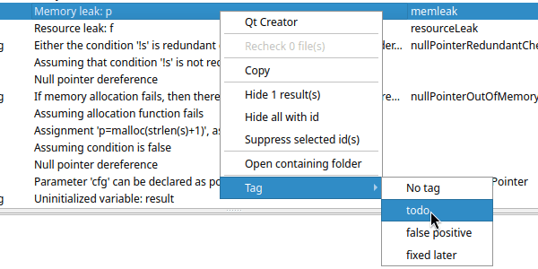

Tags let you categorize warnings by hand. You choose the names of the tags yourself. Some ideas:
todo, checked,
fixed later,bug, false
positive, not important,frontend, network,
team b.Unlike suppressions, tags do not remove warnings. They are a way to keep track of what you have looked at and what you have decided about each warning.
Open File > Edit Project File..., go to the Warning options tab and enter the tag names in Warning tags, separated by semicolons:
todo;false positive;fixed later
Tag names can contain letters, digits and spaces. Tags need a project; there are no tags when you analyze without a project.
Select one or more warnings, right-click, open the Tag submenu and choose a tag. Choose No tag to remove the tag. The Tag submenu is only shown if the project has tags.

The tag is shown in the Tags column. Click the column header to sort the warnings by tag, so that warnings with the same tag are listed together.
The tags you give to warnings are saved in the project file at once. Each tagged warning is identified by a hash of the warning and the code of the function it is in, so the tag stays with the warning when code elsewhere in the file changes or lines are added above the function. If the function itself is changed, the warning gets a new hash and the tag is lost. That is intended: when the code has changed, the warning should be looked at again.
Because the tags are in the project file, everyone who uses the project file sees the same tags. Tags are also included when you save the results as XML.